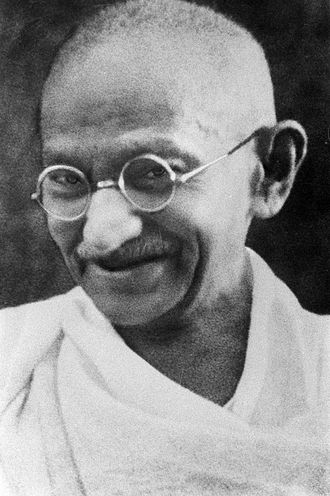

Mahatma Gandhi
Born and raised in a Hindu merchant caste family in coastal Gujarat, India, and trained in law at the Inner Temple, London, Gandhi first employed nonviolent civil disobedience as an expatriate lawyer in South Africa, in the resident Indian community's struggle for civil rights. After his return to India in 1915, he set about organising peasants, farmers, and urban labourers to protest against excessive land-tax and discrimination. Assuming leadership of the Indian National Congress in 1921, Gandhi led nationwide campaigns for various social causes and for achieving Swaraj or self-rule.(From Wikipedia)
Gandhi's favorite websites
India.com